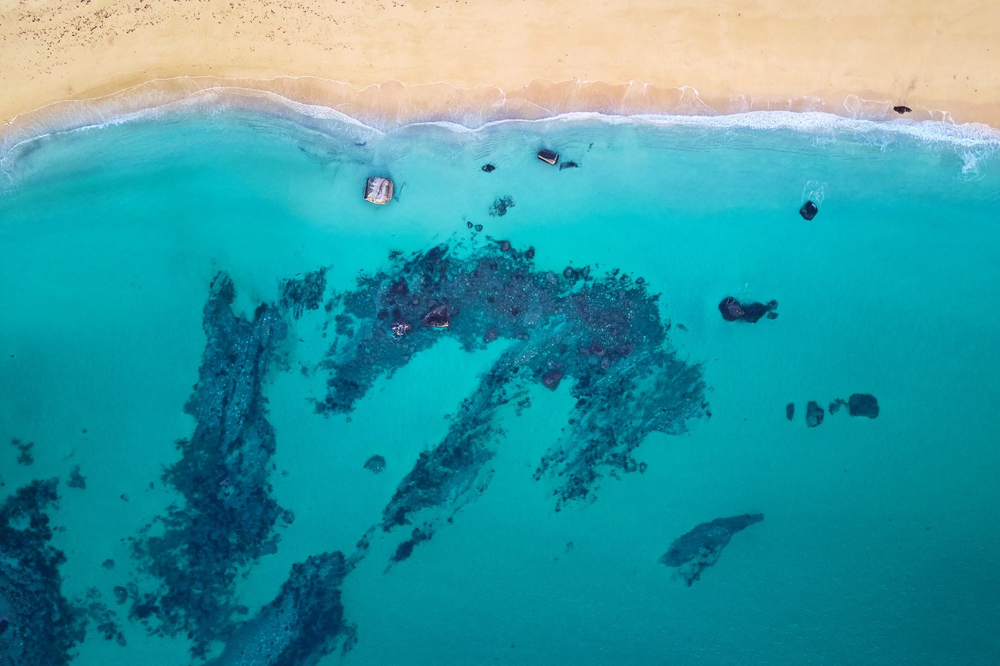

projects
open-source contribution is part of my work ethos. Feel free to take a look at some of my projects here

a growth hacker
what i do

sem (organic & paid), marketing & sales automation.

CMS build and design, DNS, hosting, security & tech- seo.

full stack (MERN) web development and app development, testing and security.
open-source contribution is part of my work ethos. Feel free to take a look at some of my projects here
i'm social
follow me on twitter 👈 or linkedin 👇